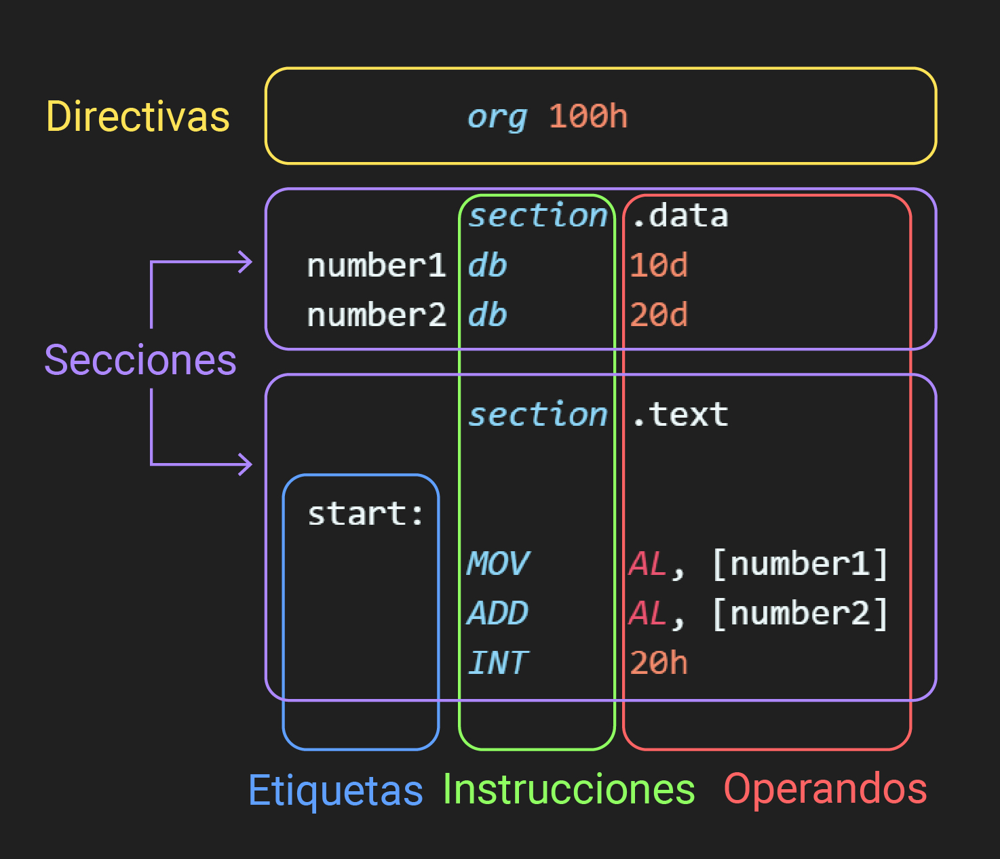
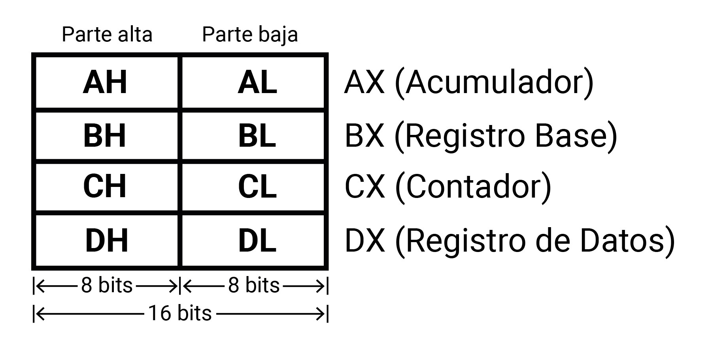
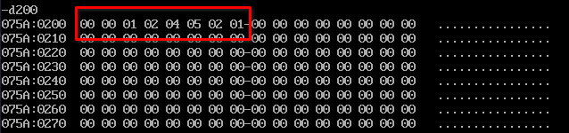

La programación en lenguaje ensamblador es una forma de programar a bajo nivel que se comunica directamente con el microprocesador de una computadora. En contraste con los lenguajes de alto nivel, como Python o Java, que están diseñados para ser más fáciles de entender y escribir, el ensamblador trabaja a un nivel más cercano al hardware físico de la máquina.
El lenguaje de ensamblador X86 tiene una estructura y sintaxis específica que permite a los programadores escribir instrucciones que la CPU puede ejecutar directamente. Comprender esta sintaxis es crucial para desarrollar programas eficientes y funcionales. A continuación se describen los componentes clave de la sintaxis del ensamblador X86:

Los registros de datos son componentes fundamentales en Ensamblador, ya que se usan en el manejo de operaciones aritméticas y el almacenamiento temporal de datos. Cada registro de datos es de 16 bits de longitud y puede ser tratado como dos registros de 8 bits independientes, es decir, están compuesto por dos subregistros de 8 bits: parte alta y parte baja.
Estos registros residen en la Unidad de Ejecución (EU), los cuales son:

.asm. Este archivo contendrá el programa en ensamblador.
nasm -f bin <nombre>.asm -o <nombre>.com
.com con el nombre indicado en el
comando.
dosbox .
debug.exe <nombre>.com
r - Mostrar Registros: Muestra el estado actual de
los registros de la CPU, lo que proporciona información sobre los
valores almacenados en los registros de la CPU.
t - Ejecutar Instrucción: Ejecuta una sola
instrucción del programa, permitiendo un paso a través del código
para inspeccionar su ejecución paso a paso.
t n - Ejecutar Instrucciones: Ejecuta un número
específico (n) de instrucciones del programa, lo que permite avanzar rápidamente
a través del código.
g - Ejecutar Programa: Ejecuta todo el programa de
forma continua hasta que alcanza un punto de interrupción o
finaliza, lo que facilita la ejecución completa del programa.
d 200 - Ver Memoria: Muestra el estado de la memoria en
la dirección específica 200h, lo que permite inspeccionar el contenido de la memoria en esa
ubicación.
q - Salir: Sale del depurador DEBUG, regresando al
prompt de la línea de comandos, lo que finaliza la sesión de
depuración.
El direccionamiento en ensamblador se refiere a la manera en que se accede a los datos necesarios para ejecutar una instrucción. Los modos de direccionamiento determinan la ubicación de los operandos que una instrucción puede utilizar, ya sea en un registro, en memoria o como un valor inmediato. Estos modos son fundamentales para entender cómo se manipulan los datos dentro de un programa en ensamblador.
La instrucción MOV es una de las más
básicas y utilizadas en ensamblador X86. Su función es mover datos de
un lugar a otro. La sintaxis general es:
MOV destino, fuente
Donde el destino no puede ser un valor
inmediato, sino más bien un registro o dirección de memoria.
byte, word, y dword
En ensamblador X86, es crucial especificar el tamaño de los datos con los que se está trabajando. Las directivas de tamaño byte, word, y dword se utilizan para este propósito:
La elección entre estas directivas depende del tamaño de los datos que se necesitan mover. Usar la directiva de tamaño adecuada es crucial para asegurar que el programa funcione correctamente y que no se produzcan errores de acceso a memoria.
Los modos de direccionamiento en ensamblador son métodos que especifican cómo una instrucción obtiene los operandos necesarios para su ejecución. Cada modo de direccionamiento ofrece un mecanismo diferente para acceder a los datos, ya sea directamente en el código, a través de registros, o mediante direcciones de memoria. La elección del modo de direccionamiento afecta la flexibilidad, la eficiencia y el tamaño del código de la máquina.
Entre los principales modos de direccionamiento tenemos los siguientes:
El modo de direccionamiento inmediato es uno de los más simples y directos en ensamblador. En este modo, el operando es un valor constante o literal que está codificado directamente en la instrucción. Este valor no se almacena en memoria o en un registro, sino que forma parte de la propia instrucción
Es posible realizar el direccionamiento inmediato con varios tipos de datos, por ejemplo:
MOV AH, 12d
Esta instrucción carga el valor decimal 12 en el registro
AH (parte alta del registro AX).
MOV AL, 14ECh;
El código anterior carga en el registro de 8 bits AL el
valor hexadecimal 14EC.
O si se desea almacenar un valor hexadecimal que comience por una
letra, por ejemplo FF, es necesario anteponerle el número
cero, de lo contrario se obtendrá un error.
MOV AL, 0FFh
MOV BH, 10010b
Con esta instrucción se ha cargado en el registro BH el
valor binario 10010 .
MOV BL, "A"
Con esta instrucción, se carga el código ASCII de la
letra A en el registro BL .
En este modo de direccionamiento, usaremos los registros como operandos, de manera que pasemos el dato contenido de un registro a otro. Hay que considerar que el registro que usemos como fuente conservara su valor original, mientras que el registro de destino copiara el valor de la fuente. Por otro lado, una cosa muy importante sobre este modo es que ambos registros deben tener el mismo tamaño.
Por ejemplo:
MOV CX, AX
En esta instrucción, se moverá el contenido del registro AX al registro CX. En este caso, AX y CX son los operandos y al realizarse la operación ambos registros contendrán el valor que AX tenia originalmente.
En el modo de direccionamiento absoluto además de registros también usamos direcciones de memoria para el manejo de datos, ya sea como fuente o como destino. Para hacerlo indicamos la dirección que deseamos usar entre corchetes.
; Direccionamiento con registros de 8 bits/1 byte
MOV [200h], CH; de registro a memoria
MOV AH, [200h]; de memoria a registro
Cada dirección de memoria almacena 1 byte de información. Si deseamos almacenar valores mayores los bytes excedentes se guardaran en las direcciones siguientes utilizando la notación little endian.
; DX actualmente tiene como valor 1241h
; Direccionamiento con registros de 16 bits/2 bytes
MOV [210h], DX; de registro a memoria
MOV BX, [210h]; de memoria a registro
En el ejemplo anterior, en la dirección hexadecimal
210 se guardara el valor hexadecimal 41 y la
dirección 211 tendrá el valor hexadecimal
12 .
Al pasarlo de memoria a registro, el contenido de la dirección
210h se guarda en la parte baja de BX y el
de la dirección 211h en la parte alta. Como resultado
tanto DX como BX ****tendrán el mismo
contenido.
Es importante señalar que el comando MOV no permite usar dos direcciones de memoria como operandos al mismo tiempo, por lo que si deseamos pasar un dato de una dirección de memoria a otra siempre debemos usar un registro como intermediario.
El modo de direccionamiento indirecto permite acceder a los datos mediante el uso de registros que contienen direcciones de memoria. En lugar de especificar un operando directamente en la instrucción, se utiliza el valor dentro de un registro como referencia a la memoria donde se encuentra el dato. Este modo es especialmente útil para manipular colecciones de datos como arrays o para implementar estructuras de datos complejas que requieren acceso dinámico.
En el direccionamiento indirecto, la CPU toma el valor de un registro, lo trata como una dirección de memoria y accede al contenido de esa dirección. Esto permite que las instrucciones trabajen con datos cuya ubicación exacta en memoria puede no ser conocida en tiempo de compilación, ofreciendo una gran flexibilidad en el manejo de datos.
Para este tipo de direccionamiento, los registros que pueden ser
utilizados para almacenar la dirección de memoria son los registros
base o índice (BX, BP, SI y
DI).
MOV BP, 210h ; Se almacena la dirección de memoria a acceder
MOV AL, [BP] ; Se obtiene el valor que se encuentra en esa dirección de memoria
En el ejemplo anterior, en la dirección hexadecimal
210 se encuentra cargado el valor hexadecimal
41 , posteriormente se carga dicha dirección de memoria
en el registro base BP con el cual se hace el
direccionamiento indirecto para obtener el valor guardado en la
dirección 210 y se guarda en el registro
AL , el cual finalmente obtiene el valor hexadecimal
41 .
Haciendo uso de los cuatro modos de direccionamientos abordados en
esta guía de laboratorio, se deberá almacenar el número de carné del
autor, colocando cada dígito en direcciones de memoria consecutivas,
comenzando desde la dirección 200h . Es importante que
para cada direccionamiento realizado se deje indicado utilizando
comentarios a qué tipo de direccionamiento corresponde.
Por ejemplo, para el alumno con carné 00124521 el
resultado final esperado es el siguiente:

desarrollo.asm. En este archivo, colocar todos los ejemplos y ejercicios
desarrollados durante la práctica de laboratorio.
tarea.asm dentro de la carpeta
"Laboratorio-03". Este archivo debe contener la solución a
la tarea propuesta.
└── Laboratorio-03
├── desarrollo.asm
└── tarea.asm
desarrollo.asm una vez completado
el desarrollo durante la práctica.
tarea.asm una vez completada la
tarea propuesta.
|
Criterios |
Porcentaje |
Desarrollo |
30% |
Tarea |
50% |
Entrega en GitHub |
20% |
|
Total |
100% |